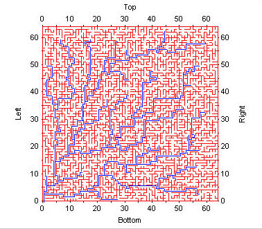

Two dimensional basin simulation
Geo-F/X has developed a very powerful, fast library for both creating and walking rectangular mazes (spanning trees). It is based on a recursive, stack-oriented approach known (internally) as the "Amazing Rat". It creates topologically complete system "graph" that can be used to create a simulation of a drainage basin as well as facilitating walking the basin in an extremely efficient manner.
